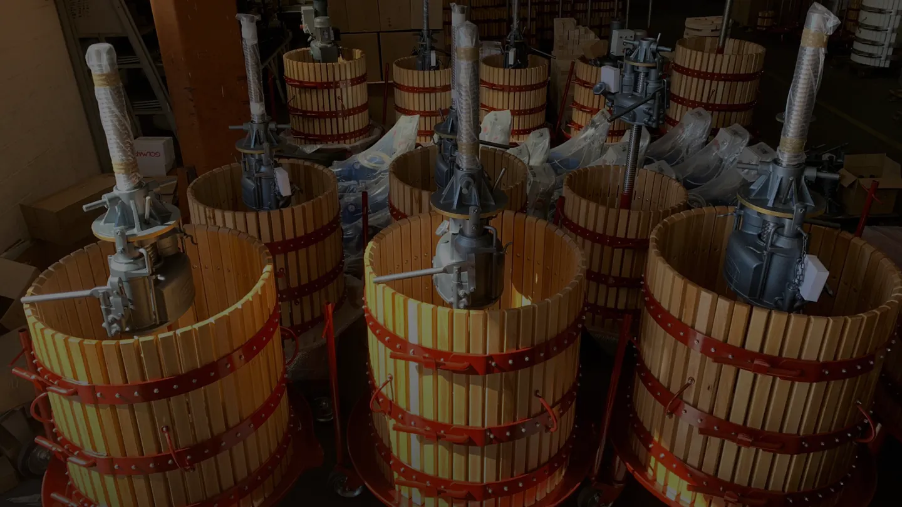
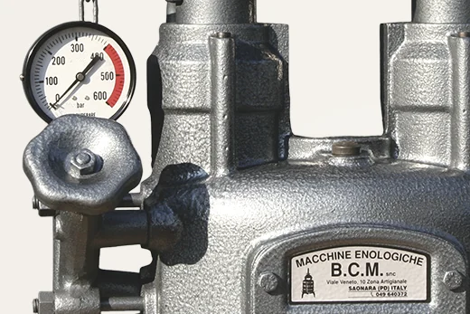
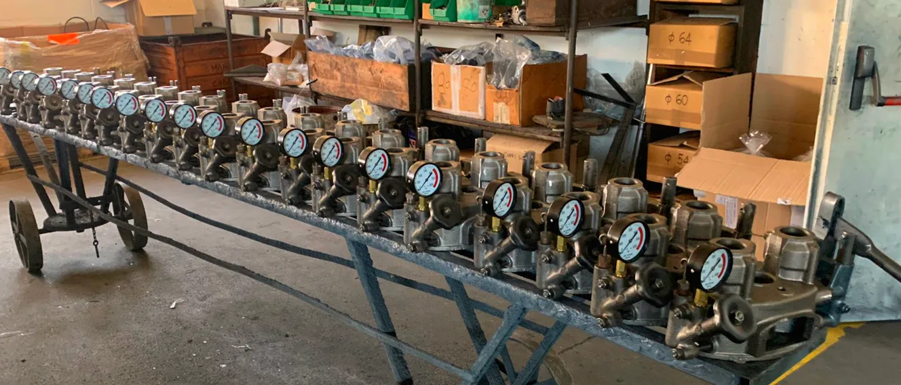
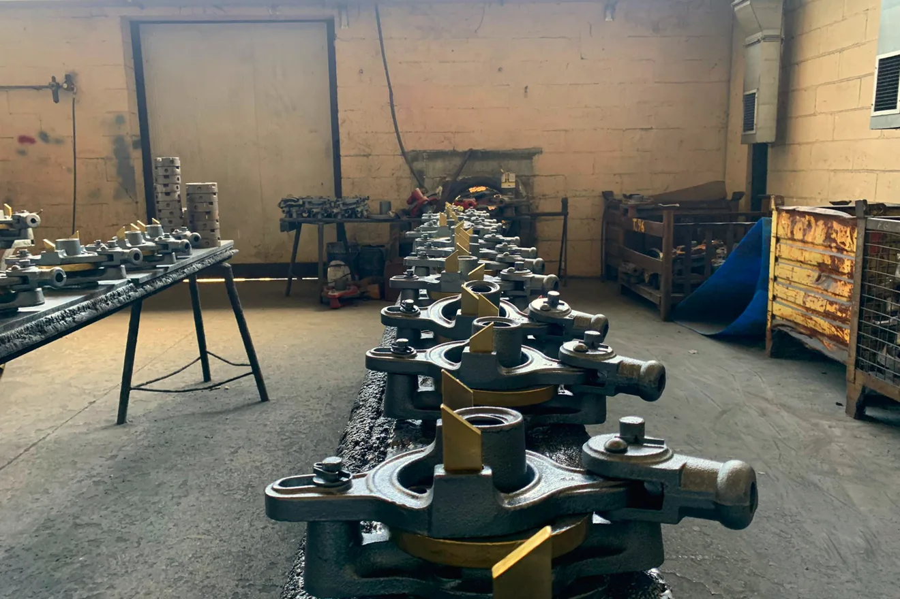

DAVID
Torchi con il DAVID / 2022
Compatibilità con il passato
Torchi, martinetti DAVID, pompe e pigiatrici. Saonara, dal 1960.Ricambi anche per le macchine vecchie.
Ricambi? Mandaci una fotoRicambi di ogni componente, anche delle macchine vecchie
Da oltre 30 anni teniamo i ricambi e facciamo la manutenzione di ogni singolo componente.
Dal lunedì al venerdì, dalle 8 alle 18
Per trovare il pezzo giusto ci servono tre cose:
- la foto della targhetta (o della macchina intera);
- il diametro della gabbia o della vite, se è un torchio;
- la foto del pezzo da cambiare.
Si apre il tuo programma di posta: allega le foto.

Torchi, pompe e pigiatrici
-
Torchi idraulici
Otto modelli, gabbia da 45 a 90 cm, da 100 a 660 kg di vinaccia. Con il martinetto DAVID.
-
Martinetti DAVID
Cinque misure, da A-50 a E-90, per le viti da 45 a 100 mm.
-
Pompe Volumex
Inox AISI 304, girante in neoprene per uso alimentare. Fino a 250 hl/ora, con il variatore fino a 950.
-
Pigiatrici
Pigiatrici e pigiadiraspatrici, a mano e a motore, da 500 a 1500 kg l’ora.
-
Torchi a cricco e a vite
A cricco in 13 misure da 15 a 80 cm, a vite in 5. Faggio stagionato, perni forgiati a caldo.
-
Gabbie
In faggio evaporato, in inox o in PVC, da 15 a 100 cm, a 3 o 4 cerchi.
-
Pompe con inverter
Volumex 50, 60 e 70 con l’inverter a bordo, fino a 300 hl/ora, con radiocontrollo, sensori e timer.
-
Presse per frutta
Pressafrutta, presse versatili e l’idropressa, che spreme con l’acqua dell’acquedotto.

Martinetto DAVID, brevettato negli anni 80
Va su tutti i torchi, dal diametro 45 al 100
Lo sforzo esercitato dall’operatore è minimo.
Pressione di esercizio fino a 400 atmosfere. Va anche sui torchi con la gabbia in inox o in PVC; a richiesta con tappi e mezzelune.
Oggi è un marchio registrato, e lo costruiamo solo noi.
| DAVID | Vite, mm | Spinta, kg |
|---|---|---|
| A-50 | 45, 50, 55 | 16.000 |
| B-60 | 60, 65 | 22.600 |
| C-70 | 70, 75 | 30.700 |
| D-80 | 80, 85 | 40.000 |
| E-90 | 90, 95, 100 | 50.850 |
L’officina di Saonara
La ditta BCM nasce nel 1960: la fondano i soci Marino Benetazzo e Mario Camerotto.
Siamo una piccola e seria azienda artigianale, composta di varie persone di famiglie che si conoscono tra di loro.
Per i torchi, la scelta del miglior legno di faggio raffinato e stagionato, la forgiatura a caldo dei perni e la sagomatura dei cerchi.

Cataloghi in quattro lingue
Ogni catalogo è in italiano, tedesco, inglese e francese.
Catalogues in English. Kataloge auf Deutsch. Catalogues en français.
Come si compra
Per prezzi e disponibilità chiamaci o scrivici. Spediamo in tutto il mondo.
Preventivo per una macchina nuova
Dicci la macchina e la misura o la portata.
Rivenditori ed estero
Per maggiori informazioni contattaci direttamente.
Scrivici per email / Dealer enquiry